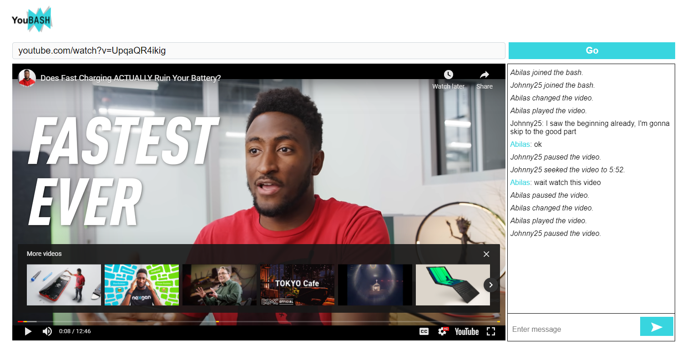
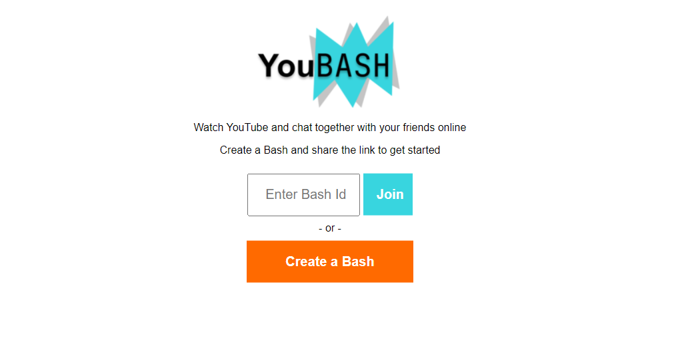
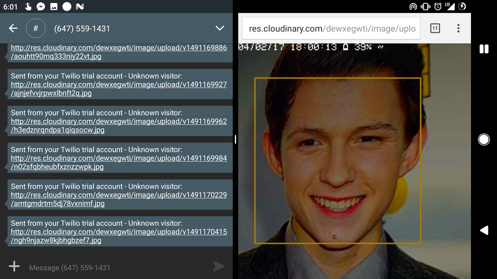
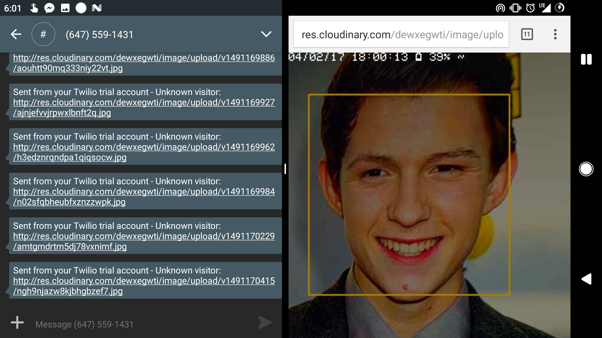
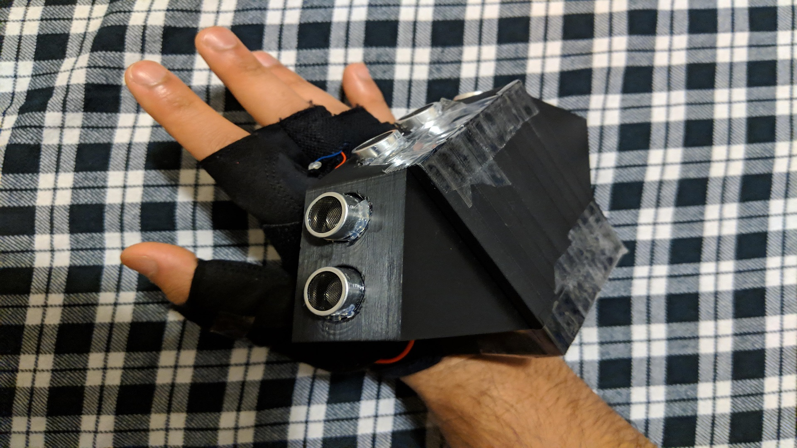
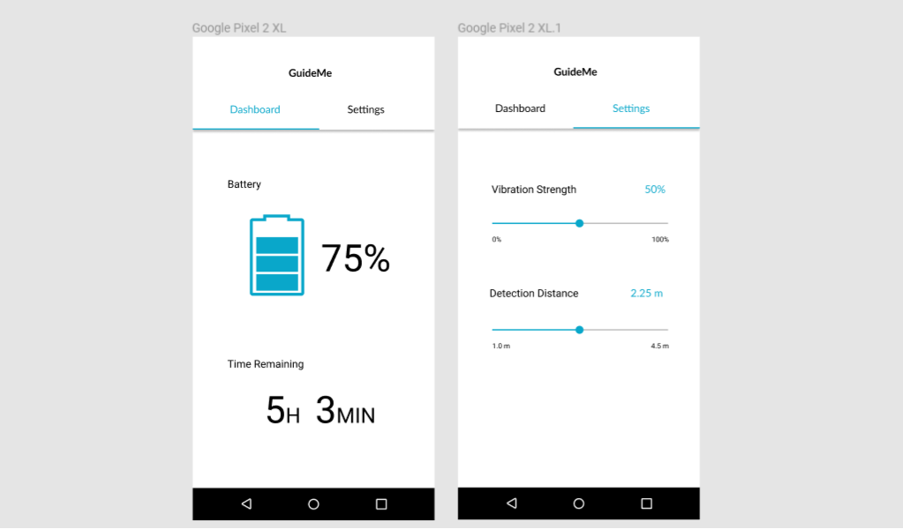
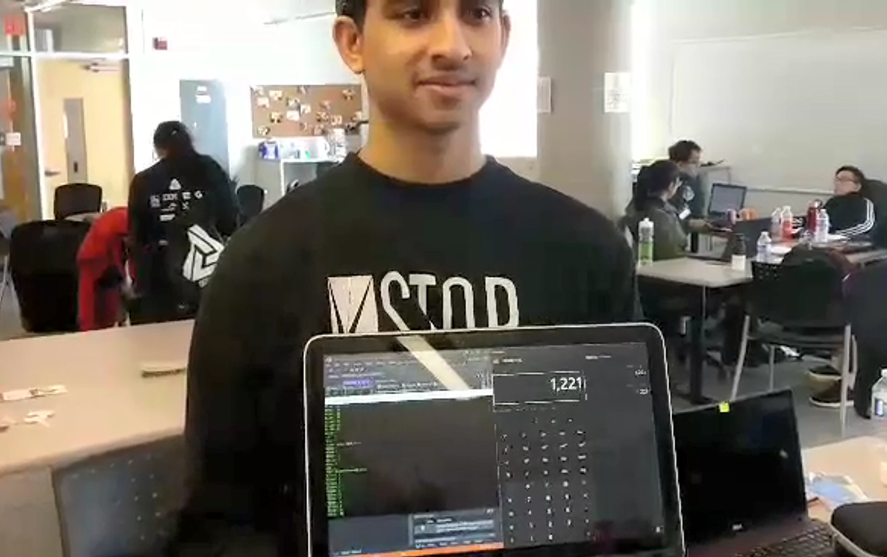

 
YouBash - YouTube Watch Party
Made with node.js and socket.io, YouBash is an online youtube watch party. You can get together with a group of friends and watch the same videos with shared controls, synced video times and a chat room. The algorithm accounts for special edge cases resulting from YouTube's limited API. We've also fine tuned it to account for factors like large latency differences. The website is live at youba.sh 

Open! Facial Recognition
Open! is verfication system based on facial recognition. It uses OpenCV for image processing and the Kairos API for image recognition. A custom blur detection and reduction algorithm was also implemented to increase facial recognition. Unrecognized visitors would have their picture sent to the owner using the Twilio Text API.
Kirsh Image Edge Detection Circuit
Using Kirsch's algorithm, we implemented an edge detection program for black & white images. The algorithm uses a 3*3 matrix of pixels. The pixel currently being examined will be in the centre of the matrix, while each pixel beside it (top, bottom, left, right and corners) will fill the rest of the matrix. From there a calculation will be made between the pixel in focus and it's neighbours to see how radically different the brightness values are (blacks are less bright, whites are more bright). If the difference meets a certain threshhold, an edge is detected and is marked. Edge Detection is used in the industry often times to seperate the subject from the background, which can be further used for effects such as bokeh. 
Guide-Me Glove
The Guide-Me Glove was built using an arduino, vibration motors and ultrasonic sensors to help guide the visually impaired around obstacles. The ultrasonic sensors read distances to nearby objects. The corresponding vibration motors provide haptic feedback to the user to warn them when an object is nearby. A companion mobile app was built to allow for custom configuration and checking battery.
Muse-It: Hands Free Shortcuts
Muse-IT uses the Muse headband to be able to perform shortcuts on Windows OS. The muse headband is able to read brain signals using various sensors, and then output the data in a parsable format. We took this data and were able to single out key actions such as blinking and jaw clenching. We were able to trigger hands free shortcuts on the Windows OS such as playing music using these actions
×